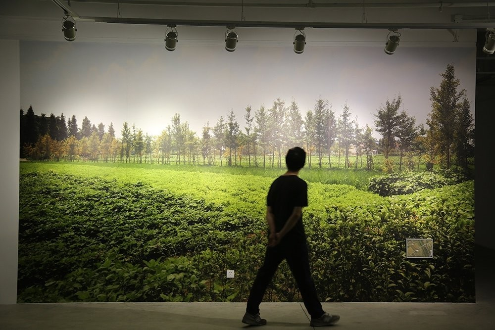

无名小路 | NAMELESS PATH
图片打印在墙纸上，可变尺寸，2016
Wallpaper, Variable, 2016
2016年夏天，我在乡间修了一条98米长的无名小路。
In the summer of 2016, I had a 98m-long nameless path built in the county.
作品实施现场，如皋
Work site, Rugao

N9艺术中心，苏州
N9 Art Center, Suzhou
小路所在位置，如皋
Location of the work, Rugao